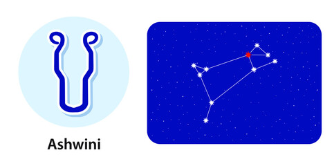

Nakshatra Ashwini
Ashwini Nakshatra
Characteristics male
A male born in Ashwini Nakshatra flaunts an attractive look donned with bright eyes, a broad forehead and a slightly bulky nose. These people are kind-hearted and are known to go to any extent for people they care about. These males are very patient and have the potential of guiding others in their endeavours and through their problems. Although calm, but it is a tough task to control these natives when they go haywire. On the downside, Males born in Ashwini Nakshatra fear criticism. It's this fear that sometimes stops them from changing things around themselves.
Profession male
The most suitable profession for a male born in Ashwini Nakshatra is anything self-owned. These natives like to be their own masters and thus do well in business. The male should also try his hand at creative fields such as music, literature, advertising, etc. However, when it comes to profession, the native will likely have to struggle up to the age of 30, after which he will have the gains of his hard work.
Compatibility male
The male native born in Ashwini Nakshatra has a tough compatibility scenario with his father. The native is more likely to be compatible with his maternal uncle. Also, friends of his will come to his rescue when he needs them the most. The native is likely to enjoy a compatible relationship with his wife and usually marries between 26 to 30 years of age.
Health male
The male-native born in Ashwini Nakshatra is not known to face illness or severe health issues in his life. However, occasional body aches, dental woes and problems such as diabetes may catch him off guard and make him lazy and careless. Thus, he must practice adopting a healthy lifestyle.
Characteristics female
The female born in the Ashwini Nakshatra flaunts an attractive look donned with bright eyes, a broad forehead and a slightly longer nose. The physical qualities help her get attention whenever she seeks it. The Ashwini Nakshatra female homes within her a perfect blend of modern and traditional qualities, which makes her a desired human across all generations. These women are very patient in nature, however, may behave in an immature manner at times. In life, females born in the Ashwini Nakshatra are invariably ready to try new things and take risks.
Profession female
The most suitable profession for a female born in Ashwini Nakshatra is anything that involves off-field work, such as administration. These women are tight-fisted with money and thus are able to save enough. These women have a natural bend towards family life and thus may choose to retire way before their retirement age to spend time with family or doing what they love
Compatibility female
The woman born in Ashwini Nakshatra usually gets married between 23 to 26 years of age. Post the given age, getting married or finding a groom may get difficult for the woman. Chances of divorce or incompatibility in the relationship too form; if the marriage is delayed. In the family, a woman born in Ashwini nakshatra shares a close bonding with her mother and brother.
Health female
The female born in Ashwini Nakshatra may have to suffer from minor menstrual problems in her life. Overall, the health of the female will not hinder the pace of her life. The female born in Ashwini Nakshatra should be careful while cooking too.
Ashwini Nakshatra Padas
Pada 1st: The first quarter of the Ashwini Nakshatra comes in Aries Navamsa and is governed by Mars. The pada infiltrates the native with the tendency to win over others. However, this tendency may also lead to clashes.
Pada 2nd: The second pada of the Ashwini Nakshatra falls in the Taurus Navamsa. It is governed by Venus. The natives born in this pada have natural artistic skills with a thirst for perfection.
Pada 3rd: The third pada of the Ashwini Nakshatra falls in the Gemini Navamsa. It is governed by Mercury. People born in this quarter are intelligent and have good decision-making ability along with strong communication skills.
Pada 4th: The fourth pada of the Ashwini nakshatra comes in the falls Cancer Navamsa. It is governed by the Moon. The pada embeds an impending will to fix others in the native. These people do well in the medical profession.
Features of Ashwini Nakshatra
Symbol- Horse head
Ruling planet- Ketu
Gender- Male
Gana- Deva
Guna- Rajas/rajas/rajas
Presiding Deity- Ashwini Kumaras, the horse headed twins
Animal- Male Horse
Indian Zodiac- 0° – 13°20′ Mesha